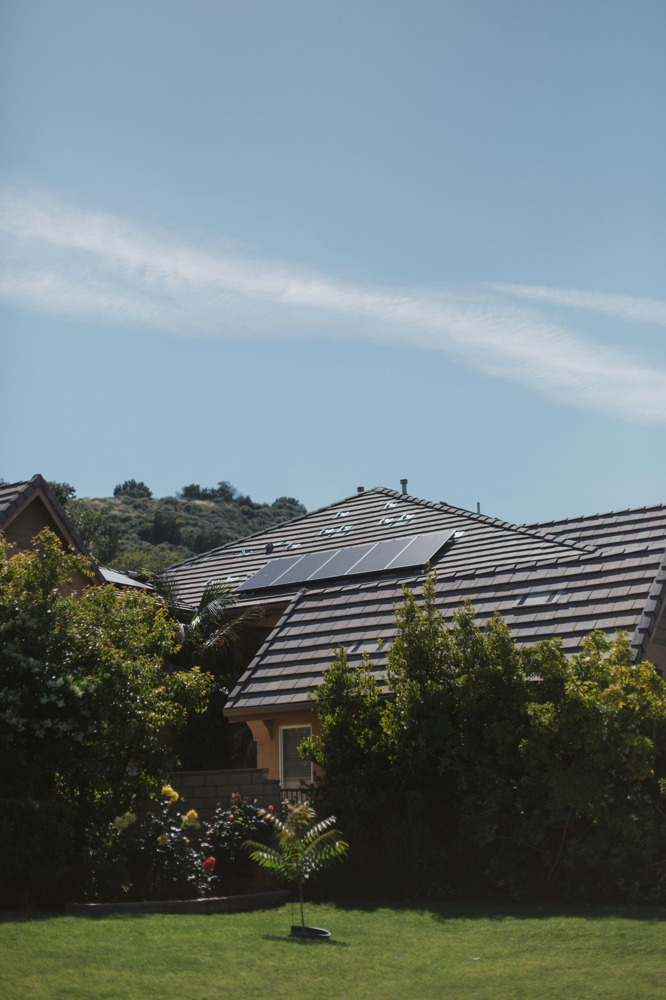

Solar energy is the most abundant form of energy present in the universe. The sad truth though is that this energy is meagerly used. Infact, only 4.5% of the electricity generated was produced from Solar energy. As responsible citizens of this world, we must harvest this energy to preserve the environment for the generations to come. The most common way and easiest way for houseowners to harvest this energy is through solar electric systems which can be set up using solar panels.
Basic Information
Solar electric systems work by setting up solar panels. These solar panels consist of special cells which absorb sunlight and causes electrical charges to move which leads to the flow of electricity. This electricity can then be used to power other electrical appliances. On average, setting up such solar panels at a house takes between 15,000 to 20,000 dollars. Although this may seem expensive, there are various financing options which provide fexible payment and reduce the upfront fee making setting up solar panels more financially accessible.

Benefits
There are various incentives to installing solar panels at homes. These include, but are not limited to -
-
Tax Rebates
The congress had extended the federal residential solar tax credit, allowing tax payers to get a tax rebate of 30% of the cost of their solar electric systems on their income tax. Besides the rebate from Congress, individiuals also get tax rebates depending on where they live. Each place gives different tax credits.
-
Utility Bills
Solar panels are capable of producing sufficient energy to power an entire house. This can be less or more depending on the consumption, but in general it should be able to meet all requirements. This helps to reduce utility bills as electricity is produced by the homeowner. Also, incase there is an excess of electricity produced, it can be sold to the utility and they will pay in turn.
-
Reliability
Solar systems are very reliable producers of energy and can produce elctricity in almost every climate. They also ensure that you still have electricity in case of an electric outage. These solar panels are long lasting and only need to be replaced every 25 to 30 years.
-
Property Value
Adding solar panels to the roof is generally seen as an upgrade to the property and increases its values. Many buyers have started to prefer buying houses with solar panels installed on the roof than those without solar panels.